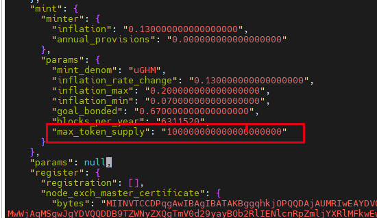

引导节点搭建
1.1 开放端口
一般来说， 放开 p2p，tendermint 即可。
# 开启相关端口
ufw allow 26656 # 开放p2p端口
ufw allow 26657 # 开放tendermint端口（可选）
ufw allow 9091 # grpcweb（可选）
ufw allow 9090 # grpc（可选）
ufw allow 1317 # api（可选）
1.2 enclave 初始化
# 创建存放sgx远程证明证书的目录
# 这个证书有因特尔签名的报告
mkdir -p /opt/ghm/.sgx_ghms
# 创建环境变量
# /usr/lib 下存放了三个重要的.so 动态库，与sgx相关
export GHM_ENCLAVE_DIR=/usr/lib
export GHM_SGX_STORAGE=/opt/ghm/.sgx_ghms
# 初始化enclava环境
# 这个命令会生成一个英特尔签名的远程证明证书
ghmd init-enclave
# 检查是否有生成证书
ls -h /opt/ghm/.sgx_ghms/attestation_cert.der
1.3 设置链参数
# 设置链的id
ghmd config chain-id ghmdev
# 设置key模式
ghmd config keyring-backend test
# 初始化链 banana 是节点别名，可以换
ghmd init banana --chain-id ghmdev
# 修改 app 中 gas 代币的名字
# 修改 创世文件中的代币名字
# stake -> uGHM
perl -i -pe 's/"stake"/ "uGHM"/g' ~/.ghmd/config/genesis.json
# 修改mint 模块下的最大代币供应量数值
# 请手动修改, 如下面图：

1.4 设置初始账号金额
# 添加一个账号,助记词会打印在屏幕
# 备份助记词相关助记词
ghmd keys add a
ghmd keys add b
ghmd keys add c
# 配置账号的初始金额
# 将 a,b,c 账号的信息写入创世块配置
ghmd add-genesis-account "$(ghmd keys show -a a)" 1000000000000000000uGHM
ghmd add-genesis-account "$(ghmd keys show -a b)" 1000000000000000000uGHM
ghmd add-genesis-account "$(ghmd keys show -a c)" 1000000000000000000uGHM
1.5 创建链的第一个验证器
# 生成一笔交易： 账号 a 委托的第一个验证器 1 GHM = 1000000 uGHM 最少自我委托是 1GHM
# 注意要加上gas-prices
ghmd gentx a 1000000uGHM --chain-id ghmdev --gas-prices 0.25uGHM
# 将这比交易收集进入genesis.json 中
ghmd collect-gentxs
# 验证是genesis.json 是否有效
ghmd validate-genesis
1.6 运行初始节点
# 初始化引导节点
ghmd init-bootstrap
ghmd validate-genesis
# orlogs
# 创建一个logs文件夹, 方便看日志而已
mkdir logs
nohup ghmd start --rpc.laddr tcp://0.0.0.0:26657 --bootstrap >./logs/nohup.out 2>&1 &
# 运行之后，查看
ghmd status
或者直接运行
ghmd start --rpc.laddr tcp://0.0.0.0:26657 --bootstrap